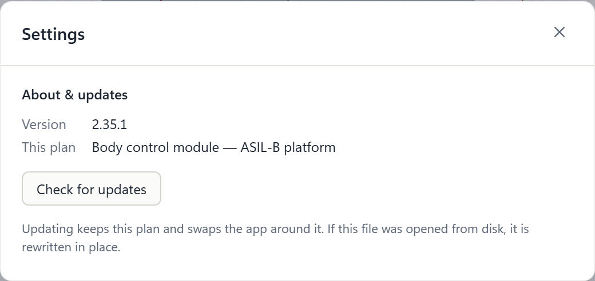
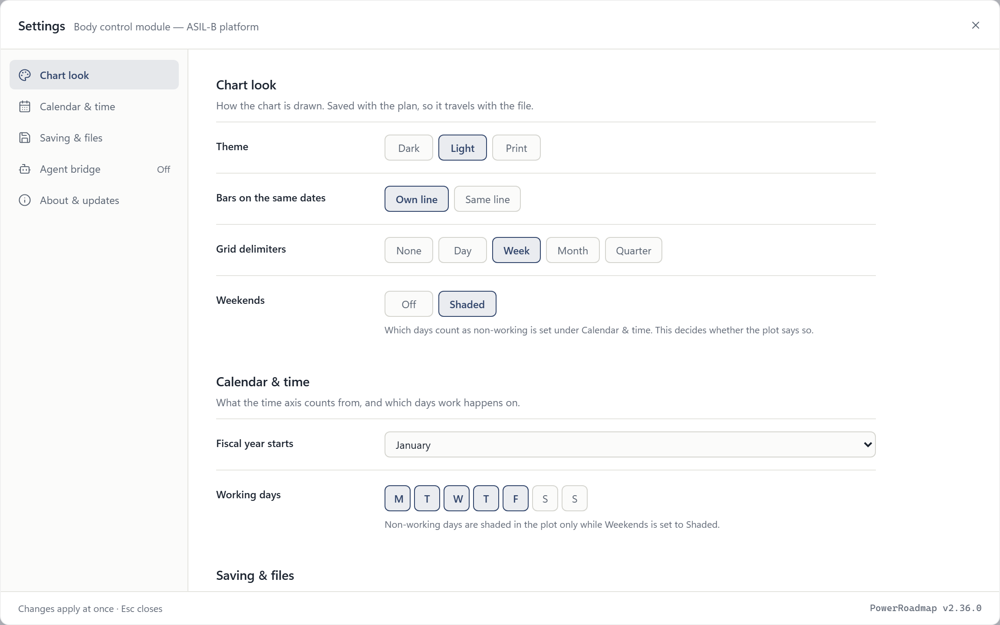
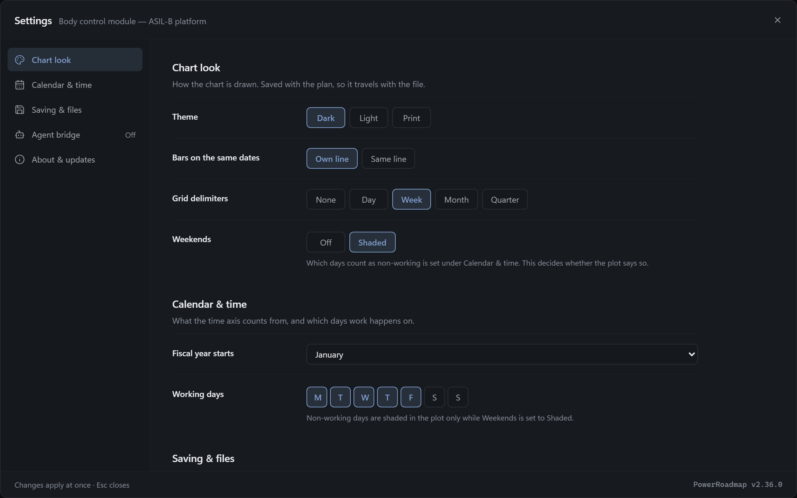
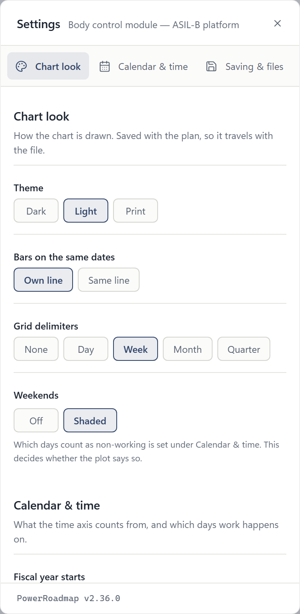
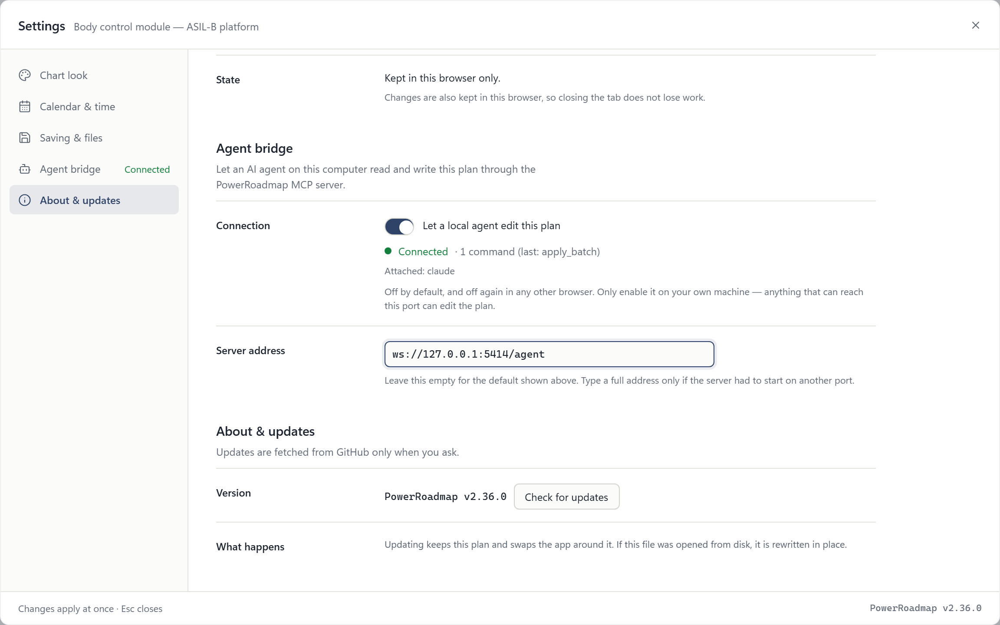
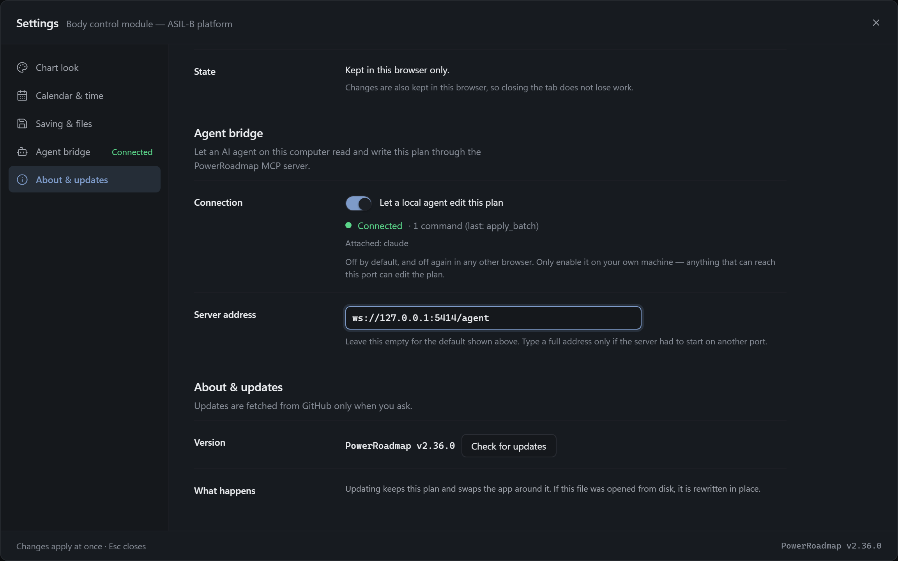
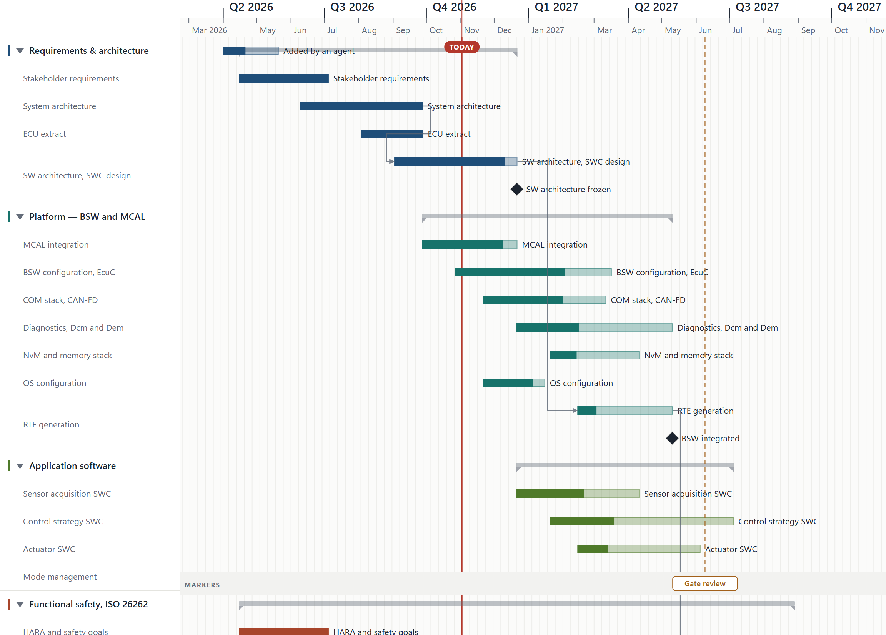

Settings held one section and the agent bridge was not in the app anyone ships. Both are now the shape the owner named: a page of sections with a side index, and a bridge that travels with every build and does nothing until it is asked to.
Settings was a 520×245 dialog holding one section, About & updates, with two controls in it. It bound no preference and persisted nothing. Everything a planner might look for — the theme, the weekends, which days are working days — lived in a context inside the command bar that appears when something is selected, and the agent bridge lived in a header button that production builds did not have. There was nowhere to put a second section, which is why there was never a second section.


The panel is PowerScroll’s: one continuously scrolling page beside an index that marks the section you are reading and scrolls to the one you click. Three of its details are there because that app has a comment explaining each of them. The index follows the scroll by the last heading to pass the top of the pane, with a special case at the bottom so the last section can be marked at all. The backdrop closes on the press rather than the click, so a drag that starts on a control and ends outside does not take the panel away. And the final section carries trailing room, because a section shorter than the pane can never scroll its own heading to the top.
PowerScroll hard-codes its greys, because it has one theme. This app has
three, and a panel built from literals reads as light-on-light the moment
the planner switches. Every colour here is a theme token, including a new
one for the bridge’s own status word: the existing
--color-success is a decorative mint that measures under
2:1 on a white panel and cannot carry text.


It genuinely was not there. The toggle was assigned behind
import.meta.env.DEV, which is statically false in a
production build, so the dynamic import sat in a dead branch and the
whole bridge was dropped from the bundle. A requirement said so
— SRS-ABR-050, “no bridge code shall be present in the
portable single-file HTML build output” — and a test
enforced it by grepping the built file.
That row treated the presence of the code as the risk. The risk is a connection, and the code cannot make one: it dials nothing until the planner ticks the box, the answer is kept per browser and never in the plan, and the socket is loopback only. Holding the line cost the feature entirely — the planner the app is for could not use an agent on their own machine, while the requirement was satisfied by a build that simply did not have it. PowerScroll ships the same kind of single file to the same kind of third party and its protection is that the thing does nothing until asked. SRS-ABR-052 says that instead, in three conditions that are each checkable.


There is no token delivery mechanism that works for a file opened from disk: its origin is opaque and there is no same-origin server to serve one from, which is what SRS-ABR-042 requires. So a page that could not have been given a token is admitted without one, and the protection is the loopback bind, the deliberate opt-in and a stated warning. Another local page can therefore dial the same port and impersonate the plan, receiving an agent’s commands and answering them with fictions. That is disclosure and spoofing, not a write into the planner’s document, and it sits inside the bound SRS-ABR-043 already draws. It is recorded in the backlog, not quietly left out. The token stays mandatory wherever it can be delivered, so the dev server loses nothing.
The e2e suite cannot show this. It serves the app over http, where a token is both mandatory and available — so the interesting case, the one the whole requirement turns on, is the one it never enters. This is the built single file opened from disk, with the MCP server started by hand, and the agent’s own tool call going through it.

apply_batch — no reload, and no token exists on this origin.
file:
bars on screen → 33 → one apply_batch → 34, no reload
what the agent was told → 34, matching the screen
panel → Connected · 1 command (last: apply_batch) · Attached: claude
The first attempt connected in one theme and read “Another plan
took over” in the other, with one plan open. Ticking the box starts
a dial at the default address; typing an address immediately after stops
that instance and starts another — and the first was already
awaiting the token lookup, which connect() did not re-check
afterwards. It opened its socket anyway and said hello, the server
adopted it as a second page, and the live one was told to stand down. So
the page displaced itself, and the next edit went to a socket
nobody was reading: 33 bars before an apply_batch that
reported success, and 33 after. Both themes connect and apply now, and
four unit tests hold the guard in place — two of them controls, so
“opened nothing” cannot pass against a stub that opens
nothing ever.
One MCP server process is spawned per agent session, so two agents
always race for a fixed port. The loser died on
EADDRINUSE — and died holding the MCP transport, so
whatever was waiting on initialize never heard back and
could not tell that from a bridge that was merely slow. That second
agent simply had no bridge.
PowerScroll’s answer is an election: the first process to bind the port owns the page connection and every later one joins it as a peer over that same port, forwarding its tool calls. Exactly one socket reaches the page, so the page needs no notion of several servers, and there is one obvious place to hold the lease. Agents may connect freely but may not write at the same time: a call takes the lease for its duration plus a short idle grace, so a turn of several batches is atomic in practice, and a refused agent is told who holds it and for how long. Reads never take it, because an agent waiting must still be able to find out what it is waiting for.
get_status while blocked → answers, and reports the lease
a second page connects → the first is told to stand down, then closed
The displacement order is load-bearing rather than polite. Without the stand-down frame the displaced page’s reconnect backoff fires, it displaces the newcomer in turn, and the two trade the connection indefinitely while each command lands in whichever page happens to hold it. All of this is driven as two real processes against a hand-rolled page client, because none of it is observable from inside one module.
The screen was already live. Measured on a running page: adding a task over the bridge put the bar on the chart and the count in the status bar with no reload, because the bridge mutates the same stores the app renders from. The report was not.
apply_batch took its census of what is on screen
synchronously, immediately after writing the store, before React had
committed anything. The three methods that did wait counted two
animation frames — a guess, and one frame short here, because the
commit lands on a scheduler callback that runs after both. So every
report described the chart as it had been before the edit being
reported on, and get_render would have returned a picture
of the old plan. An agent that cannot see its own edit re-applies it.
Counting frames was the mistake, so the fix does not count them better.
The chart stamps the revision it drew onto its own <svg>
and the census waits for that number, bounded so a page that is never
going to catch up still answers rather than hanging. Every view an agent
reads now goes through that one wait, which a source-level gate asserts:
exactly two calls to the raw census survive, and both are named.
On a 375px phone the offer to restore an unsaved session rendered at
top: 8 as a 187×114 box and landed squarely on the
header’s right-hand controls.
document.elementFromPoint aimed at the centre of the gear
returned the banner. So the one control that now leads to every
preference, the agent bridge included, could not be reached on a phone
until the banner was dismissed — and the banner is the first thing
a returning planner sees. On a desktop it missed by luck: the box is
centred and narrow and the buttons are at the right edge.
elementFromPoint = the banner
after → the gear, with the banner below the header
banner width at 375px → 187px over four lines → 351px
The width was a second bug under the first: with left: 50%
and no explicit width, shrink-to-fit is capped by the space from the
centre to the right edge, so max-width could never widen it.
Two of the e2e tests written for the panel failed on tablet and mobile
only, and both failures were worth having: one was this banner
intercepting the click, and the other was an assertion of mine that only
held on a desktop.
| Gate | Result |
|---|---|
tsc -b --force | clean |
eslint src mcp tests | 0 errors, 17 warnings — all pre-existing |
npm test | 553 passed, 0 failed, across 68 files — 41 of those tests new here |
npm run test:e2e, whole suite | 358 passed, 7 failed, 241 skipped — the skips are the pointer-and-desktop-only tests gating themselves off tablet and mobile. Every one of the 7 was a crashed WebKit target, not a defect: re-run alone, the same 7 specs gave 69 passed, 0 failed. |
npm run build:template | index.html, 464.91 kB (gzip 137.94 kB) — up 35.48 kB on v2.35.1’s shipped 429.43 kB |
| the bridge, driven as two processes | hub election, peer forwarding, lease, idle release, displacement, origin refusal |
| a live page, driven over MCP | add a task → 34 bars on screen and 34 in the report, no reload; undo → 33 |
The build grew by 35 kB. That is the bridge, which now ships: the client, the protocol, the feedback module that serialises and rasterises the chart, and the panel that turns it on. It was previously tree-shaken out of the portable file entirely, so this is the cost of the feature existing where the planner can reach it rather than a regression to explain away.
New tests. 42 unit tests in six new files — the server’s topology driven as two real processes (9), the wait that makes a report describe its own edit (7), bridge consent and what the panel is told (12), the build-output gate inverted from absent to present-and-inert (5), the self-displacement guard (4), and the chrome-against-panel parity gate (5) — plus 12 panel tests in a real browser on each of three projects, and two more on the bridge spec. Two tests went with the old requirement: the build-output gate was rewritten rather than relaxed, and it was run red against the committed v2.35.1 template first, failing on all three literals, which is the before-state it asserts. Eight of the forty-two are controls that exist so the test beside them cannot pass vacuously.
The failures, named. The first run came back red on open-bad-file, owner-round, review-fixes, row-ops and selection-bar (twice) on tablet, and on touch-and-targets on mobile — one of them reporting Target crashed outright. The cause was the harness, not the app: this suite leaks one WebKitNetworkProcess per browser context and never reaps it. 129 of them had taken the machine down to 0.7 GB free of 15.8 GB, which kills browsers under whatever test happens to be running. Killed, and re-run with two workers instead of six, those six specs and the mobile one gave 69 passed, 0 failed. They are named here rather than summarised as a count, because a count is what a red suite looks like when nobody looked — and the leak is now on the backlog, since a gate that starves itself is a gate that will miss a real defect next time.